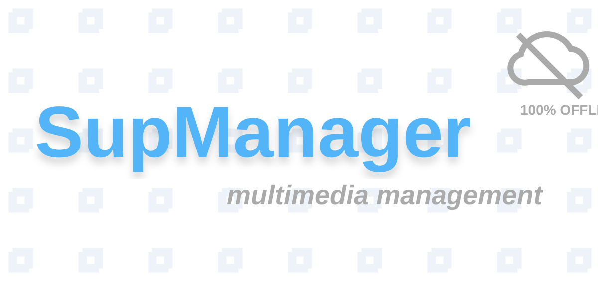
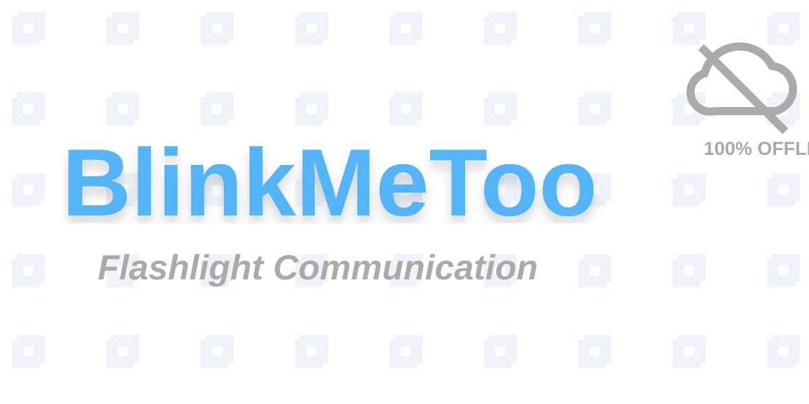
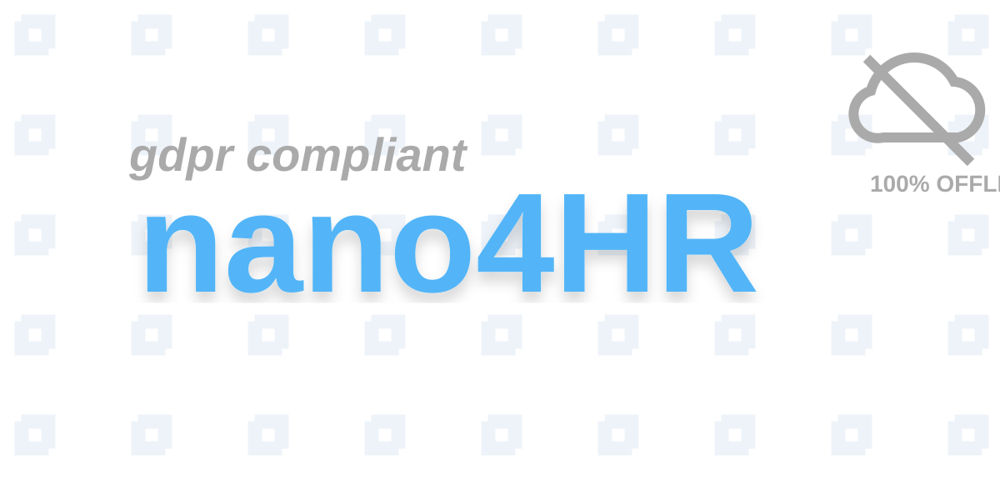
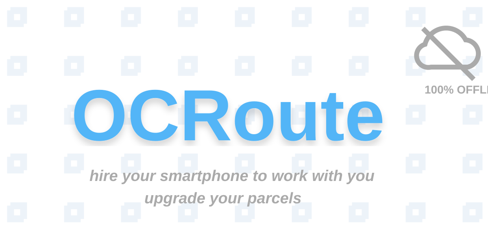

DBDevStudio
Wybierz aplikację, aby otworzyć jej osobny podgląd. Kliknięcie grafiki lub przycisku „Uruchom podgląd” otwiera aplikację produkcyjną w nowej karcie.



66600.PL
Serwis 66600.PL. Kod źródłowy w repozytorium 66-600-pl jest aplikacją PHP; podgląd otwieramy przez działającą witrynę, nie przez surowy plik GitHub.
KurierAI
Repozytorium jest prywatne, dlatego publiczny podgląd nie jest dostępny.